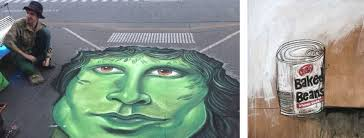
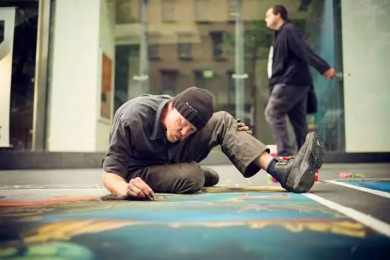
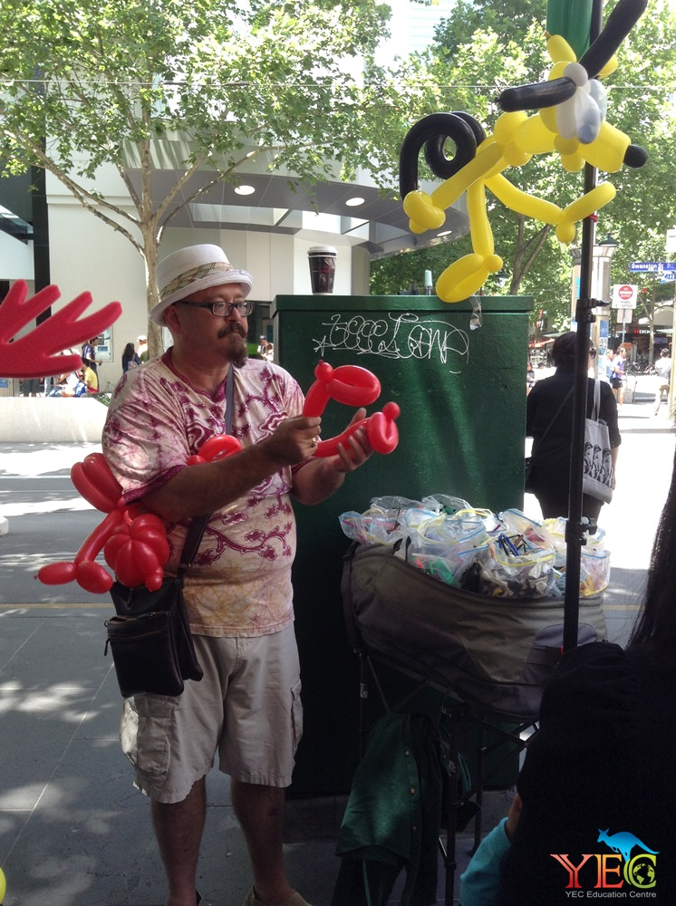
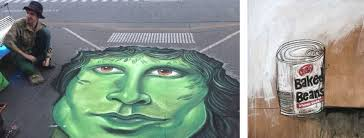
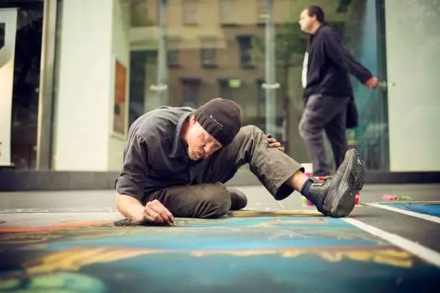
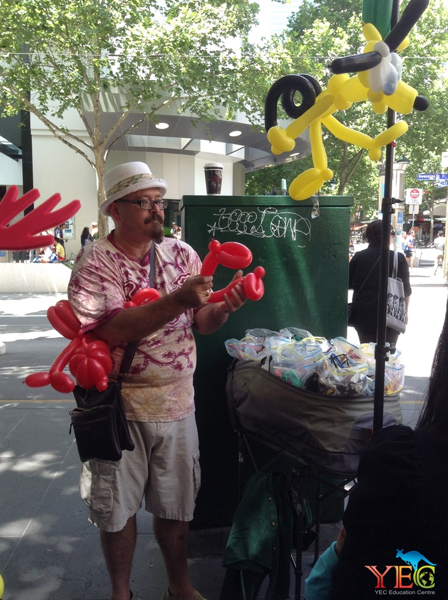

03
Humanistic
Interaction
Individuals, cultures, and urban space are all referred to in different ways in humanistic interaction, which serves as the link between them. In addition, it is a tourist destination. The key to a fulfilling life and a prosperous society is to foster the growth and entrepreneurship of public sectors. If you're looking for public spaces, Melbourne has mapped cultural tourism.


 




